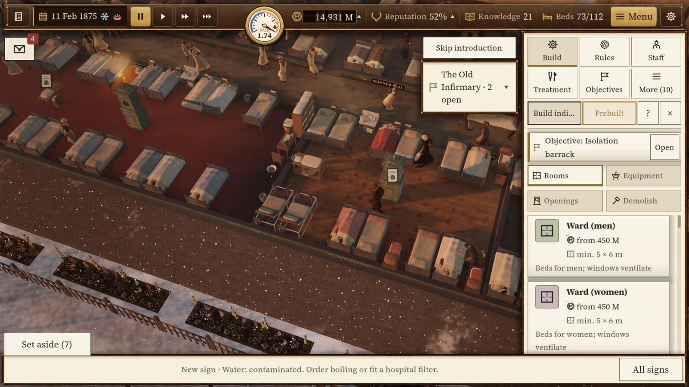
Ein Krankenhaus bauen, Saal für SaalBuild a hospital, ward by ward
Du beginnst mit einem alten Korridorspital und wächst bis zum luftigen Pavillonsystem: Säle, Isolierstation, Operationssaal, Waschküche, Apotheke. Alles im Schnitt, mittendrin Personal bei der Arbeit.Start with an old corridor hospital and grow towards the airy pavilion system: wards, isolation unit, operating theatre, laundry, pharmacy. All in cutaway, with staff at work in the middle of it.
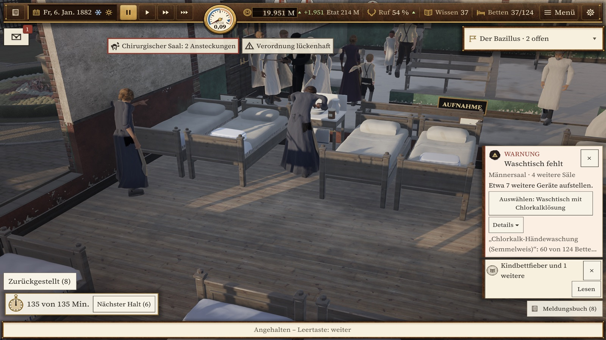
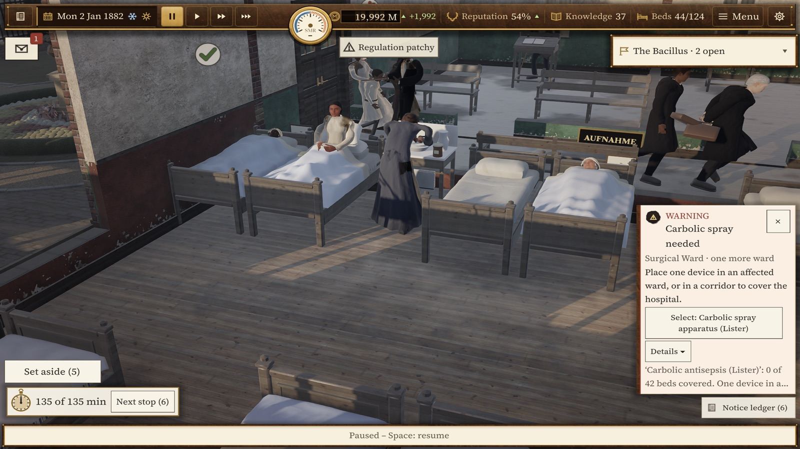
Simulieren, was Krankheit wirklich überträgtSimulate what really spreads disease
Hände, Instrumente, Wäsche und Wasser tragen die Ansteckung. Anfangs siehst du nur Geruch und Dunst, wie deine Zeitgenossen. Erst mit der Bakteriologie wird die Keimlast sichtbar. Bis dahin musst du die Ursachen selbst finden.Hands, instruments, linen and water carry infection. At first you see only smell and haze, like your contemporaries. Only bacteriology makes the germ load visible. Until then you have to find the causes yourself.
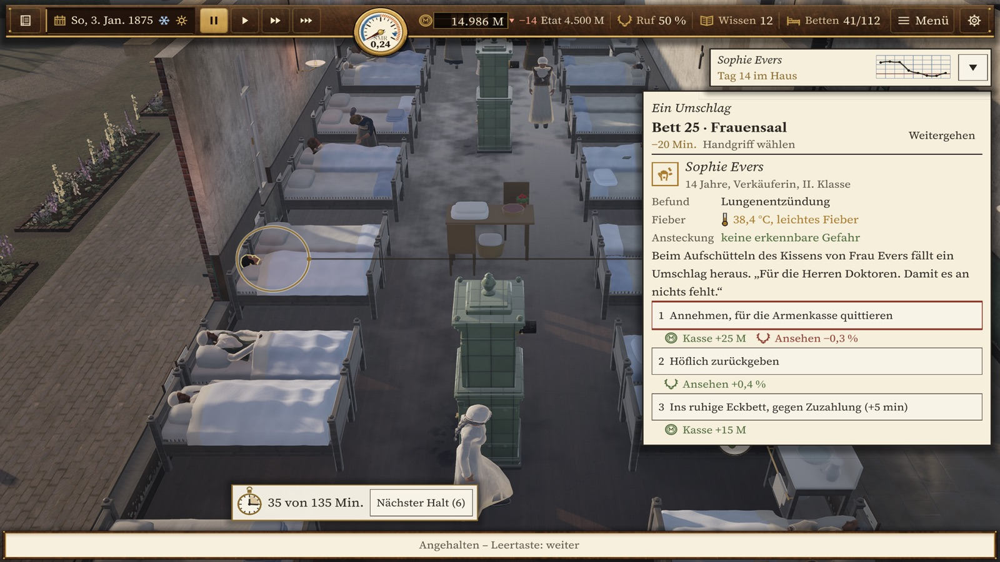
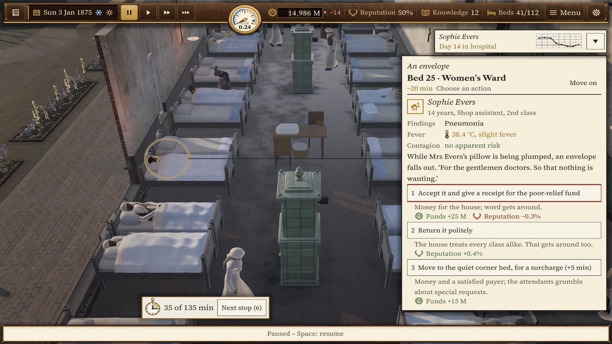
Mit Belegen überzeugenWin arguments with evidence
Jeder Arzt hat eine Lehre. Neue Hausregeln wie Händewaschung mit Chlorkalk kosten Ansehen, bis du Ergebnisse zeigst: Sterblichkeit, Sektionsbefunde, Vergleichsstudien. Fall für Fall.Every doctor holds a doctrine. New house rules such as washing hands in chlorinated lime cost you standing until you show results: mortality, post-mortem findings, comparative studies. One case at a time.
Echte Medizingeschichte erlebenLive through real medical history
Entdeckungen kommen zu ihren echten Daten, von Listers Antisepsis bis zu Kochs Tuberkelbazillus. Nicht jede Neuheit hält, was sie verspricht. Der Kodex im Spiel nennt die Quellen und kennzeichnet jede Vereinfachung.Discoveries arrive on their real dates, from Lister's antisepsis to Koch's tubercle bacillus. Not every novelty keeps its promise. The in-game Codex names its sources and marks every simplification.
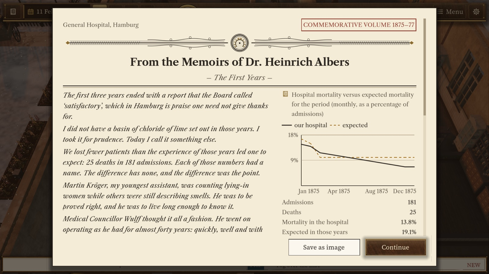
Ein Haus mit GedächtnisA house with a memory
Patienten haben Namen, Personal hat Eigenschaften, Briefe erzählen, was aus ihnen wird. Was du entscheidest, bleibt im Haus: als Messingtafel, als Freibett-Schild, als Brief einer Familie. Am Ende schreibt das Haus seine eigene Festschrift.Patients have names, staff have traits, and letters tell what became of them. What you decide stays in the house: as a brass plaque, a free-bed sign, a letter from a family. In the end the house writes its own anniversary book.
Im Early Access enthaltenIncluded in Early Access
- Die ganze Kampagne: sechs Kapitel von 1875 bis zur Cholera 1892, mit Kapitelwertung und MedaillenThe full campaign: six chapters from 1875 to the cholera of 1892, with chapter ratings and medals
- Freies Spiel mit wählbarem Startjahr, Schwierigkeit und BedingungenFree play with selectable start year, difficulty and conditions
- Zwölf Szenarien in Hamburg und Altona: Auswandererhallen, Privatklinik, Hafenkrankenhaus, Cholera-NotlazarettTwelve scenarios in Hamburg and Altona: emigrant halls, private clinic, harbour hospital, cholera emergency ward
- Ein Kodex mit Quellen zu jeder EntdeckungA Codex with sources for every discovery
- Deutsch und Englisch; Vereinfachtes Chinesisch als BetaEnglish and German; Simplified Chinese as a beta
Bilder aus dem SpielScreenshots
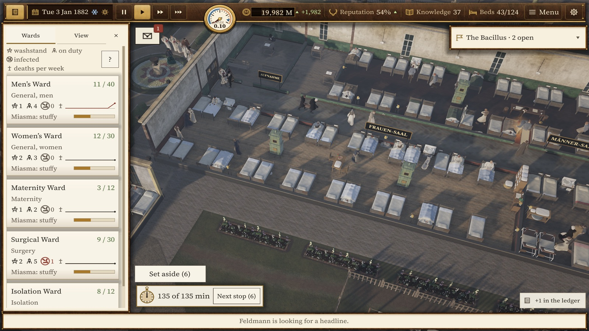
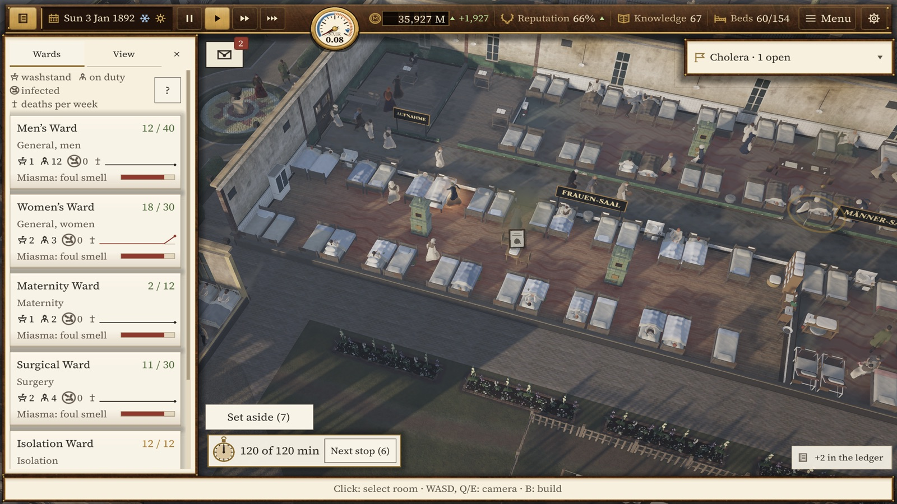
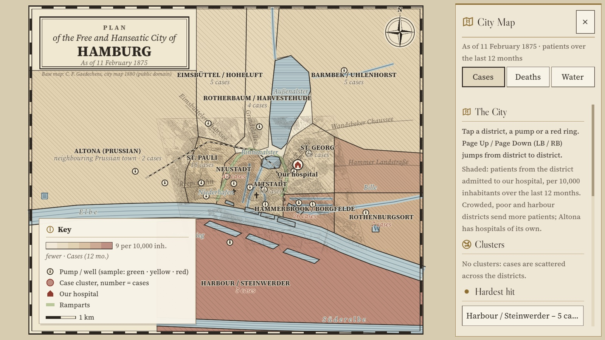
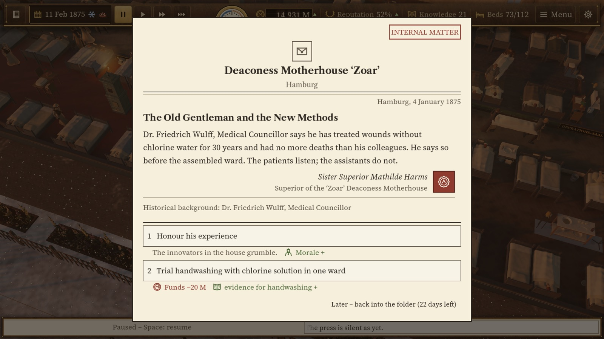
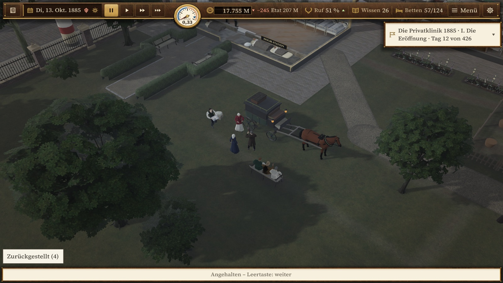
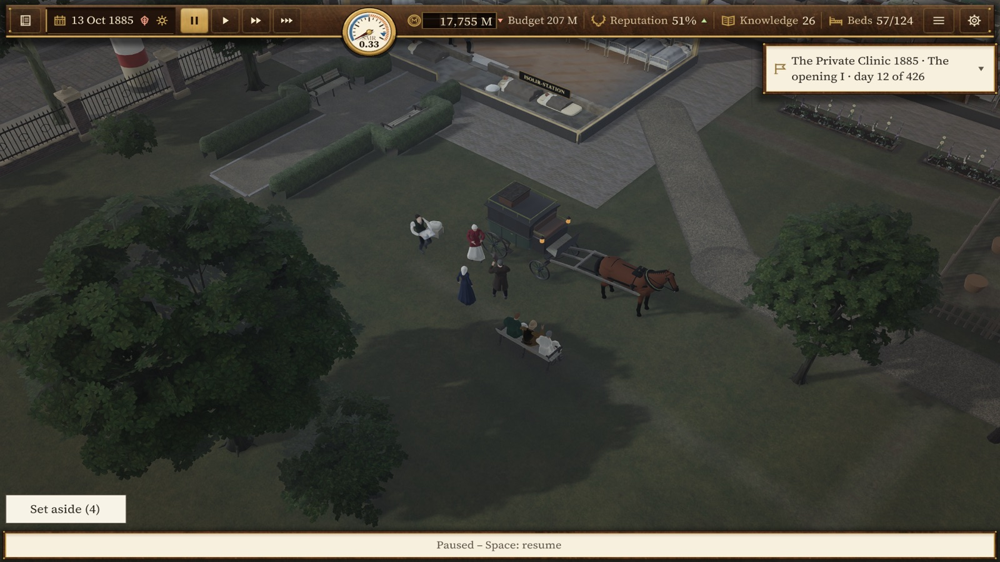
Inhaltshinweis: Germ Theory behandelt Krankheit, Tod, Geburt und die Choleraepidemie von 1892 zurückhaltend und historisch. Es gibt keine Gewaltdarstellung. Die Stadt ist echt, das Krankenhaus erfunden.Content note: Germ Theory deals with illness, death, childbirth and the cholera epidemic of 1892 in a restrained, historical way. There is no depiction of violence. The city is real, the hospital is fictional.